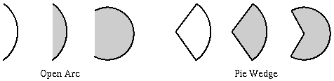
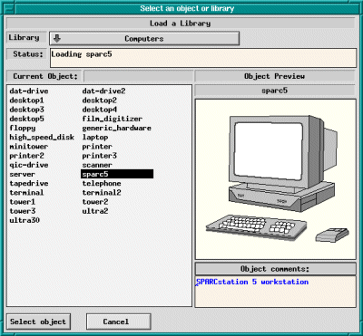

描画モードには以下のものがあります。
![[Circle by rad]](../images/circle-rad-button.gif)
![[Circle by diam]](../images/circle-diam-button.gif) Circles (円)
Circles (円)
![[Ellipse by rad]](../images/ellipse-rad-button.gif)
![[Ellipse by diam]](../images/ellipse-diam-button.gif) Ellipses (楕円)
Ellipses (楕円)
![[Closed Approx Spline]](../images/closed-approx-spline-button.gif)
![[Open Approx Spline]](../images/open-approx-spline-button.gif)
![[Closed Interp Spline]](../images/closed-interp-spline-button.gif)
![[Open Approx Spline]](../images/open-interp-spline-button.gif) Spline Curves (スプライン曲線)
Spline Curves (スプライン曲線)
![[Polyline]](../images/polyline-button.gif) Polylines (折れ線)
Polylines (折れ線)
![[Polygon]](../images/polygon-button.gif) Polygons (多角形)
Polygons (多角形)
![[Regular Polygon]](../images/regular-polygon-button.gif) Regular Polygons (正多角形)
Regular Polygons (正多角形)
![[Box]](../images/box-button.gif) Boxes (長方形)
Boxes (長方形)
![[Arc Box]](../images/arc-box-button.gif) Arc Boxes (角を丸めた長方形)
Arc Boxes (角を丸めた長方形)
![[Arc]](../images/arc-button.gif) Arcs (円弧)
Arcs (円弧)
![[Picture]](../images/pict-button.gif) Picture Objects (イメージの取り込み)
Picture Objects (イメージの取り込み)
![[Text]](../images/text-button.gif) Texts (文字列)
Texts (文字列)
![[Libraries]](../images/library-button.gif) Libraries (ライブラリ)
Libraries (ライブラリ)
描画モードの選択は対応するボタンをクリックすることによって行ないます。 選択された描画モードのボタンは反転して表示されます。 新たに生成されたオブジェクトの属性は 属性パネル で設定されているものとなりますので、 オブジェクトの入力に先立って属性の設定を行なっておくべきです。 ですが、オブジェクトの属性は、オブジェクトを入力した後で EDIT や UPDATE によって 変更することも可能です。
マウスボタンの機能は 選択されている描画モードやその時の状況に応じて変わりますが、 マウス機能インジケーター には常に各マウスボタンの機能が表示されています。 オブジェクトの入力は主にマウスボタン1を用いて行ないますが、 しばしばマウスボタン2も使用します。 多くの状況では、マウスボタン3 (`cancel') は 操作を取り消すために用いることができます。
(CIRCLE)
前者では、まず円の中心でマウスボタン1 (`center point') をクリックし、 次に円周上の任意の点で再びマウスボタン1 (`set radius') をクリックします。
後者では、まず円周上の任意の点でマウスボタン1 (`diameter point') をクリックし、 次に円周上の反対側の点で再びマウスボタン1 (`final point') をクリックします。
FILL STYLE で 塗りつぶしが指定されている場合には、 円の内部はその指定に従って塗りつぶされます。 ごく小さな塗りつぶされた円を入力したい場合には、 POLYLINE を用いることもできます。
入力に際して、 メッセージ・パネル には 円の大きさ (半径、もしくは直径) が逐次表示されます。
(ELLIPSE)
前者では、まず楕円の中心でマウスボタン1 (`center point') をクリックし、 次に楕円を囲む (外接する) 仮想的な矩形の任意の角の点で 再びマウスボタン1 (`corner point') をクリックします。
後者では、楕円を囲む仮想的な矩形の任意の角の点で マウスボタン1 (`first corner') をクリックし、 次にその対角の点で再びマウスボタン1 (`final corner') をクリックします。
TEXT/ELLIPSE ANGLE で 0 以外の角度が設定されている場合には、楕円はその角度だけ (角度が正であれば反時計方向へ) 回転します。
(CLOSED APPROXIMATED SPLINE)
SPLINE、POLYGON、 及び POLYLINE でフリーハンドでの入力を行なうためには、 最初の点でマウスボタン2 (`freehand') をクリックし、 マウスをドラグすることによって線を入力します。 マウスを動かすと、線に点が追加されていきます。 最後に、入力を終えるためにマウスボタン2 (`final point') を もう一度クリックします。
スプライン曲線について も参照して下さい。
(APPROXIMATED SPLINE)
スプライン曲線について も参照して下さい。
(CLOSED INTERPOLATED SPLINE)
スプライン曲線について も参照して下さい。
(INTERPOLATED SPLINE)
スプライン曲線について も参照して下さい。
(POLYLINE)
折れ線や直線を入力する場合には、 最初の点でマウスボタン1 (`first point') をクリックし、 次に途中の点をマウスボタン1 (`next point') のクリックを 繰り返すことによって指定していきます。 最後に、マウスボタン2 (`final point') で最後の点を指定します。 この操作は、POLYGON や SPLINE でも同様です。
POLYLINE、POLYGON、 あるいは SPLINE で フリーハンドの線を入力する場合には、 最初の点でマウスボタン2 (`freehand') をクリックし、 マウスをドラグすることによって線を入力します。 マウスを動かすと、線に点が追加されていきます。 最後に、入力を終えるためにマウスボタン2 (`final point') を もう一度クリックします。
単一の点を入力する場合には、 マウスボタン3 (`single point') をクリックします。 入力される点の形状は、 CAP STYLE で ROUND が選択されている場合には塗りつぶされた円に、 それ以外の場合には塗りつぶされた正方形になります。 いずれの場合でも、点の大きさは 線の太さと同一となります。
FILL STYLE で 塗りつぶしが指定されている場合には、 その折れ線で囲まれた領域 (最初の点と最後の点は結ばれているものと考える) は その指定に従って塗りつぶされます。 複雑な領域を塗りつぶす際には、 塗りつぶすべき部分を「奇遇規則」によって決定します。
 どのオブジェクトの入力に際しても、
入力の途中でマウスボタン3 (`cancel') をクリックすることによって
すべての入力を取り消すことができます。
3つ以上の点を持つオブジェクトにおいては、
SHIFT キーを押した状態で
マウスボタン1 (`del point') をクリックすることによって、
入力された点を1つづつ取り消すこともできます。
どのオブジェクトの入力に際しても、
入力の途中でマウスボタン3 (`cancel') をクリックすることによって
すべての入力を取り消すことができます。
3つ以上の点を持つオブジェクトにおいては、
SHIFT キーを押した状態で
マウスボタン1 (`del point') をクリックすることによって、
入力された点を1つづつ取り消すこともできます。
折れ線、スプライン、及び多角形の入力に際して、
メッセージ・パネル には
入力された点の数と
直前の点からの距離（length、dx、及び dy) が逐次表示されます。
端の開いたオブジェクトについては、
ARROW MODE が
None 以外に設定されている場合には
線の片端、もしくは両端に矢印が付けられます。
Show line lengths が ON に設定されている場合
(Global Settings パネル や
View メニュー を参照)
には、入力中の線の長さについてより多くの情報が表示されます。
他の大半のオブジェクトの入力についても同様です。
(POLYGON)
(REGULAR POLYGON)
まず正多角形の中心でマウスボタン1 (`center point') をクリックし、 次に頂点の1つで再びマウスボタン1 (`final point') をクリックします。 辺の数は、あらかじめ NUM SIDES で 設定しておく必要があります。
実際に入力されたオブジェクトは 単なる POLYGON オブジェクトであり、 入力した後では個々の頂点を独立に 移動させられる (そしてその編集の結果は一般には正多角形とはならない) ようになります。
(BOX)
まず長方形の任意の角でマウスボタン1 (`corner point') をクリックし、 次にその対角で再びマウスボタン1 (`final point') をクリックします。
FILL STYLE で 塗りつぶしが指定されている場合には、 長方形の内部はその指定に従って塗りつぶされます。
この機能で入力した長方形を 回転させられる角度は 90度の倍数に制限されており、 それ以外の角度で回転させることはできません。 傾斜した、もしくは任意の角度で回転させることのできる長方形を入力したい場合には、 POLYGON によって入力する (多分、傾斜していない長方形を入力してから ROTATE で回転させるのが楽) 必要があります。 傾斜した正方形は、 REGULAR POLYGON で入力することもできます。
(ARC-BOX)
BOX <-> ARC-BOX を用いて、 BOX と ARC-BOX とを 切り替えることも可能です。
(ARC)
入力の方法は2つあります。
円弧には open arc と pie-wedge とがあり、 そのいずれを生成するかは ARC TYPE で設定することができます。

(IMPORTING PICTURE OBJECTS)
まず、イメージを張り付けたい領域の1つの角で マウスボタン1 (`corner point') をクリックし、 次にその対角で再びマウスボタン1 (`final corner') をクリックします。 イメージの大きさや縦横比などは後で修正することができますので、 ここで正確な大きさを指定する必要はありません。 この後、Edit パネル が開かれますので、 そのパネルの上でイメージの格納されているファイルの指定などを行ないます。 また、Edit パネルの Screen Capture ボタン を用いて、画面上に表示されているイメージを取り込むことも可能です。
以下のフォーマットのイメージ・ファイルを読み込むことが可能です。
この機能を用いて読み込んだイメージを 移動、 スケーリング、 あるいは回転させることはできますが、 その内容そのものを編集することはできません。 イメージを編集したい場合には、 代わりに xpaint や GIMP などのアプリケーションを使用して下さい。 Edit パネル の Edit Image ボタンによって 好みのアプリケーションを起動するように設定することも可能です。
PostScript や HP-GL などで書かれた図を 通常の図と同様に xfig 上で編集したい場合には、 まず pstoedit や hp2xx を用いて それらの図を Fig ファイルに変換して、その出力を Load や Merge してみて下さい。
EPSF ファイルに対しては、 xfig はイメージを描画するために GhostScript を呼び出します。 GhostScript には、``pcx256''、及び ``pbmraw'' ドライバが 組み込まれている必要があります。 ``pcx256'' ドライバはカラーのイメージを生成するために、 ``pbmraw'' ドライバはモノクロームのイメージを生成するため (xfig がモノクロームの X サーバー上で動作しているか、 もしくは -mono オプションを付けて起動された場合) に用いられます。
JPEG や XPM のサポートは、 xfig のコンパイルの際の指定 に従って組み込まれ、あるいは取り除かれます。
xfig は compress (サフィックス *.Z)、 もしくは gzip (サフィックス *.gz、もしくは *.z) によって 圧縮されたファイルも読み込むことができますが、 このためには uncompress、及び gunzip コマンドが 使用可能である必要があります。
PICTURE オブジェクトの取り扱いの方法については、 Edit パネル も参照して下さい。
(TEXT)
キャンバス上の任意の点で マウスボタン1 (`posn cursor') をクリックすることによって テキストを入力する位置を指定した後に、 キーボードからテキストを入力するか、 もしくは F18 (Sun Workstations では `Paste' キー) か F20 を押して PRIMARY カット・バッファ (xterm の cut/paste バッファ) からテキストを挿入します。 この操作に用いるキーは Fig*canvas.translations リソースによって 指定することができます。 詳細についてはリソース・ファイル (Fig.ad) を参照して下さい。 PRIMARY カット・バッファからのテキストの挿入は、 Edit メニュー の Paste Text によって行なうこともできます。
既に存在しているテキストの任意の箇所を マウスボタン1 (`posn cursor') でクリックすることにより、 新しいテキストを入力する代わりにそのテキストの編集を行なうこともできます。
TEXT/ELLIPSE ANGLE で 0 以外の角度が設定されている場合には、 テキストはその角度だけ (角度が正であれば反時計方向に) 傾斜します。
`` '' や
``
'' や
`` '' などの
Latin-1 キャラクタ (Compose キャラクタ) を、
COMPOSE (META) キーを用いて入力することができます。
これについては、
Latin-1 キャラクタ を参照して下さい。
'' などの
Latin-1 キャラクタ (Compose キャラクタ) を、
COMPOSE (META) キーを用いて入力することができます。
これについては、
Latin-1 キャラクタ を参照して下さい。
![[I18N]](../images/pict-i18n.gif) 国際化 xfig では、この機能を用いて
日本語の入力などを行なうことも可能です。
国際化 xfig では、この機能を用いて
日本語の入力などを行なうことも可能です。
テキストの入力に際しては、以下の編集機能が使用可能です。
'' や
``'' などの
Latin-1 キャラクタを入力することができます。
これについては、
Latin-1 キャラクタ を参照して下さい。
テキストに対して、 検索や置換、 あるいはスペルチェック を行なうこともできます。
(LIBRARIES)
このボタンをクリックすると、 オブジェクトのライブラリを選択するためのパネルが開かれます。 それらのライブラリの中からオブジェクトを選択して キャンバス上のそれを置きたい位置でクリックすることにより、 そのオブジェクトのコピーをキャンバスに入力することができます。

このパネルには使用可能なライブラリ のリストを示す Library メニューが置かれています。 その中からいずれかのライブラリを選択するとそのライブラリがロードされ、 いくつのオブジェクトが含まれているかがステータス・ウィンドウに、 またライブラリに含まれているオブジェクトの一覧がリスト・ボックスに表示されます。 このリストの中のオブジェクトの名前をマウスボタン1でクリックすると、 そのオブジェクトのイメージが右側の小さいキャンバスに表示されます。
入力したいオブジェクトを選択した後に Select Object ボタンを押す (あるいはリストの中のオブジェクトの名前をダブル・クリックする) とパネルが閉じられ、 選択したオブジェクトがカーソルの位置に追従して表示されるようになりますので、 キャンバス上の任意の位置でマウスボタン1 (`place object') をクリックして その位置にそのオブジェクトを入力します。 これは、同一のオブジェクトに対して繰り返して行なうことができます。
SHIFT キーを押した状態でマウスボタン1 (`place and edit') を クリックした場合には、オブジェクトに付けられたコメントを編集できるように Edit パネルが開かれます。
オブジェクトは、キャンバス上に配置する前に、 回転させたり、反転させたりすることもできます。 左に回転させるためには l を、 右に回転させるためには r を、 左右を反転させるためには h を、 また上下を反転させるためには v を押して下さい。
ライブラリから他のオブジェクトを選択するためには、 マウスボタン2 (`new object') をクリックするか、 もしくは描画モード・パネルの Library ボタンをもう一度クリックします。
表示が遅い場合や複雑なライブラリ・オブジェクトがある場合などには、 オブジェクトを配置する前にマウスを動かした際に そのオブジェクトの大きさを示す矩形のみを表示するようにすることもできます。 このモードを切り替えるためには、 SHIFT キーを押した状態でマウスボタン2 (`change draw mode') を クリックして下さい。
オブジェクト入力モードから抜けるためには、 マウスボタン3 (`cancel library') をクリックするか、 もしくは他の描画モードや編集モードに切り替えて下さい。
 全ての xfig ユーザーの利益のため、
ユーザーの方々が Fig オブジェクトをライブラリへコントリビュートし、
それを拡張していくことが期待されます。
何らかの Fig オブジェクトを既存の、あるいは新しいライブラリへ
コントリビュートしようと思われる方は、それを
xfigmail@epb1.lbl.gov
へ送って下さい。
もし必要であればその用途を制限しても構いませんが、
そのコピーや公表されるレポートでの使用などを含めた自由な使用が許されれば、
全ての人にとっての利益となるでしょう。
全ての xfig ユーザーの利益のため、
ユーザーの方々が Fig オブジェクトをライブラリへコントリビュートし、
それを拡張していくことが期待されます。
何らかの Fig オブジェクトを既存の、あるいは新しいライブラリへ
コントリビュートしようと思われる方は、それを
xfigmail@epb1.lbl.gov
へ送って下さい。
もし必要であればその用途を制限しても構いませんが、
そのコピーや公表されるレポートでの使用などを含めた自由な使用が許されれば、
全ての人にとっての利益となるでしょう。
その後、-library_dir オプション、 もしくは Fig.library_dir リソースで そのトップ・レベルのディレクトリを指定して xfig を起動すると、 そのディレクトリの下に置かれた全てのライブラリが使用できるようになります。
library_dir のデフォルトは ``$XFIGLIBDIR/Libraries'' であり、 ここには xfig と共に配布されたライブラリが xfig のインストール に際して 自動的にインストールされます。 ですから、xfig と共に配布されたライブラリを使用する際には、 library_dir の指定は不要となります。
この方法では単にトップ・レベルのディレクトリの下 (あるいはそのサブ・ディレクトリの下) に新たなディレクトリを作成するだけで 新しいライブラリを作成することができ、 ライブラリのリストを含んだファイルを編集する必要もありませんので、 2番目の方法よりも簡単でしょう。
この方法を使った場合には、 ライブラリ名はそのディレクトリ名と同一となります。 例えば、リソース ``Fig.library_dir: /xfig/Libraries'' が 定義されている場合には、 /xfig/Libraries/Flowchart ディレクトリに対応する ライブラリ名は ``Flowchart''、 /xfig/Libraries/Electrical/Physical ディレクトリに対応する ライブラリ名は ``Electrical - Physical'' となります。
その後、-library_dir、 もしくは Fig.library_dir リソースでそのファイルを指定して、 xfig を起動します。
このファイルは、例えば次のようなものとなります:
/xfig/Libraries/Electrical/Logic Electrical Parts (Logic) /xfig/Libraries/Electrical/Analog Electrical Parts (Analog) /home/tim/lib/Flowchart Tim's Flowchart Elements /home/chim/xfig/Buildings Computer Clipart
この方法の利点は柔軟性です: 異なったディレクトリの下にあるライブラリを ライブラリのリストに含めることが容易であり、 またそれぞれのライブラリに そのディレクトリ名とは無関係に任意の名前を付けることができます。
補足: いずれの方法を用いた場合でも、 *.fig ファイルを含む全てのサブ・ディレクトリが リストに含められます。
スプライン曲線についてxfig の描画モード・パネルでは、 次の4種類のスプライン曲線を選択することができます。 また、スプライン曲線を入力した後で、 SPLINE <-> LINE 機能 を用いてスプライン曲線の種類を変更することや、 それぞれの点の ``shape factor'' を調整して 曲線の形状を制御することもできます。
スプラインを用いると、次のような曲線を容易に描画することができます。
X-Spline について
注意: 以前のスプラインのモデル (quadratic B-splines、及び Bezier with hidden points) はもはやサポートされていないため、 xfig version 3.1 以前のファイルに含まれているスプライン曲線は 自動的に X-spline に変換されます。 この変換は近似に過ぎませんので、 変換された曲線は元のものと完全に同一ではありません。 通常はそれらは充分に似ているものとなりますが、 微妙なケースにおいては手での調整が必要となるかも知れません。
Latin-1 キャラクタ (Compose キャラクタ)'' を入力するためには、
COMPOSE キー (もしくは META キー、または ALT キー) を押して離し、
文字 ``a'' を、次に文字 ``"'' (二重引用符) を入力します。
``'' を入力するためには、
同様に COMPOSE、``c''、及び ``,'' を入力します。
Note: 文字 OE、及び oe は画面には表示されません。
全てのシステムにおいて、COMPOSE、META、及び ALT キーの全てを
このために使用できるわけではありません。
また、Sun Workstations などのいくつかのシステムにおいては、META キーは
 のように示されているかも知れません。
のように示されているかも知れません。
国際化 xfig を Latin-1 以外の文字セットを
用いる環境 (日本語や韓国語など) で使用している場合、
TEXT FONT で
``Times-Roman'' や ``Times-Bold'' が選択されている場合には、
これらの Latin-1 キャラクタを使用することはできません。
![[Circle Example]](../images/circle-example.gif)
![[Ellipse Example]](../images/ellipse-example.gif)
![[Polyline Example]](../images/polyline-example.gif)
![[Spline Curves]](../images/spline-curves.gif)
![[Spline Example]](../images/spline-examples.gif)
![[Spline - Shape Factor]](../images/spline-sf-example.gif)
![[Latin-1 Characters]](../images/latin1-chars.gif)